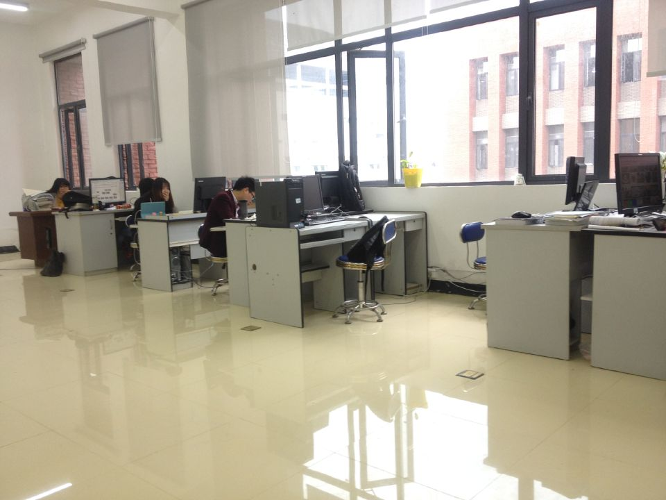

云计算实验室简介

贵州师范大学云计算实验室隶属于大数据与计算机科学学院，汇集了一支包括 两名教授、六名研究生的科研团队。 云计算实验室网站是实验室团队的窗口，致力于云计算技术和产业的普及工作， 推动中国云计算产业的发展。实验室目前与主要的IT门户网站、行业协会、 研究机构形成了紧密合作，是高交会、中国软件技术大会、全球软件技术大会、 IDC年会、云世界大会大会、Hadoop技术大会、中国云计算高峰论坛、 云计算架构师大会等会议的特邀媒体，多次受邀在《科技日报》、《中国信息化》、 《物联网与云计算》、《物联网技术》等专业报纸杂志发表文章。 成都云计算实验室的《云计算产业周报》是实验室核心团队倾情打造的云计算产业 杂志，目前唯一的云计算周报，每周的产业周报发送给的政府机构信息专家、企业， 为其决策提供及时信息和建议。